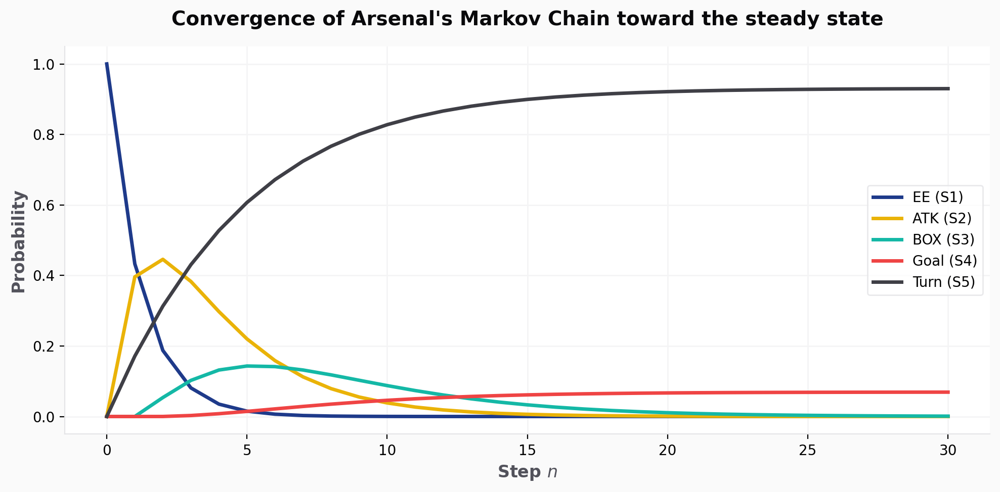

%%{init: {'theme': 'base', 'themeVariables': { 'primaryColor': '#ffffff', 'primaryTextColor': '#18181b', 'primaryBorderColor': '#e4e4e7', 'lineColor': '#a1a1aa', 'tertiaryColor': '#f4f4f5'}}}%%
stateDiagram-v2
classDef default fill:#ffffff,stroke:#e4e4e7,stroke-width:2px,color:#18181b
classDef highlight fill:#ef4444,stroke:#ef0107,stroke-width:2px,color:#ffffff,font-weight:bold
S1: EE (S1)
S2: ATK (S2)
S3: BOX (S3)
S4: Goal (S4)
S5: Turn (S5)
S1 --> S1: P11
S1 --> S2: P12
S1 --> S5: Pi5
S2 --> S2: P22
S2 --> S3: P23
S2 --> S4: P24
S2 --> S5: Pi5
S3 --> S3: P33
S3 --> S4: P34
S3 --> S5: Pi5
class S4,S5 highlight
Arteta-Ball: Modeling Arsenal’s Possession with Markov Chains
Linear Algebra
Sports Analytics
Python
Markov Chains
We model Arsenal’s 2024–25 open-play possession sequences as an absorbing Markov chain, deriving that a possession starting in the defensive third has a 6.93% chance of eventually producing a goal.
The Idea

Arsenal under Mikel Arteta play a distinctive style — patient build-up, sustained pressure in the final third, and a relentless focus on getting the ball into dangerous positions. We wanted to put a number on it.
This project (done with Charlie Xue and Schahmyr Siddiqui for MATH 2210 at Cornell) models Arsenal’s 2024–25 Premier League open-play possession sequences as an absorbing Markov chain. The key result: a possession starting outside the attacking third has a 6.93% chance of eventually producing a goal, with an expected sequence length of 5.44 actions.
Football Background
A possession sequence is a connected series of passes, carries, and shots by one team, ending when the ball is scored or lost. We model open play only — set pieces (corners, free kicks into the box) are excluded since they bypass the normal build-up structure.
The pitch is divided into three zones relative to the attacking team:

| Zone | Description |
|---|---|
| Everywhere Else (S1) | Defensive/midfield zone — goalkeeper, centre-backs, deep mids |
| Attacking Third (S2) | Ball has crossed into the final third |
| Opposition Box (S3) | Inside the 18-yard box |
Two absorbing states end the chain: Goal (S4) and Turnover (S5).
The Markov Chain Model
A Markov chain models a system that moves between states where the next state depends only on the current one — not on history. Formally:
\[P(S_{t+1} = j \mid S_t = i, S_{t-1}, \ldots) = P(S_{t+1} = j \mid S_t = i)\]
Transition probabilities form a \(5 \times 5\) stochastic matrix \(P\) \(P_{44} = P_{55} = 1\) and the chain cannot leave.
State Diagram
Building the Transition Matrix
All data is from Arsenal’s full 2024–25 Premier League season (StatMuse, FBref, Premier League). Season aggregates give stable probability estimates — a single game would be too noisy.
Show raw data extraction
import numpy as np
import pandas as pd
from IPython.display import display, Markdown
# Raw statistics from StatMuse [A,D], FBref [B], Premier League [C]
passes_completed = 16360 # total passes completed
passes_final_third = 6479 # passes into the final third
total_touches = 25374 # total touches
touches_box = 1364 # touches inside the opposition box
goals_total = 69 # total goals
goals_in_box = 67 # goals scored inside the box
goals_outside_box = 2 # goals scored outside the box
possessions_lost = 4343 # possessions lost
# Derived probabilities
P12 = passes_final_third / passes_completed
touches_att_third = total_touches * P12
P23 = touches_box / touches_att_third
touches_att_not_box = touches_att_third - touches_box
P24 = goals_outside_box / touches_att_not_box
P34 = goals_in_box / touches_box
Pi5 = possessions_lost / total_touches # uniform turnover rate
data = {
"Transition": ["EE (S1) → ATK (S2)", "ATK (S2) → BOX (S3)", "ATK (S2) → Goal (S4)", "BOX (S3) → Goal (S4)", "Any Zone → Turnover (S5)"],
"Probability": [P12, P23, P24, P34, Pi5]
}
df_probs = pd.DataFrame(data)
display(Markdown("**Derived Probabilities:**"))
display(Markdown(df_probs.to_markdown(index=False, floatfmt=".4f")))Derived Probabilities:
| Transition | Probability |
|---|---|
| EE (S1) → ATK (S2) | 0.3960 |
| ATK (S2) → BOX (S3) | 0.1357 |
| ATK (S2) → Goal (S4) | 0.0002 |
| BOX (S3) → Goal (S4) | 0.0491 |
| Any Zone → Turnover (S5) | 0.1712 |
Self-loops follow as \(P_{ii} = 1 - \sum_{j \neq i} P_{ij}\).
Three structural assumptions:
- No backward transitions — when a professional side advances, its shape and forward options persist even if the ball briefly drops.
- \(P_{13} = 0\) — a direct pass from outside the attacking third into the box is near-impossible at elite level.
- Uniform turnover rate — higher risk in the final third is acknowledged but a uniform rate keeps the model data-driven.
Show transition matrix construction
# Construct the full 5x5 transition matrix
P11 = 1 - P12 - Pi5
P22 = 1 - P23 - P24 - Pi5
P33 = 1 - P34 - Pi5
P = np.array([
[P11, P12, 0, 0, Pi5 ],
[0, P22, P23, P24, Pi5 ],
[0, 0, P33, P34, Pi5 ],
[0, 0, 0, 1.0, 0 ],
[0, 0, 0, 0, 1.0 ],
])
states = ["EE (S1)", "ATK (S2)", "BOX (S3)", "Goal (S4)", "Turn (S5)"]
df_P = pd.DataFrame(P, index=states, columns=states)
display(Markdown("**Transition Matrix P:**"))
display(Markdown(df_P.to_markdown(floatfmt=".4f")))Transition Matrix P:
| EE (S1) | ATK (S2) | BOX (S3) | Goal (S4) | Turn (S5) | |
|---|---|---|---|---|---|
| EE (S1) | 0.4328 | 0.3960 | 0.0000 | 0.0000 | 0.1712 |
| ATK (S2) | 0.0000 | 0.6929 | 0.1357 | 0.0002 | 0.1712 |
| BOX (S3) | 0.0000 | 0.0000 | 0.7797 | 0.0491 | 0.1712 |
| Goal (S4) | 0.0000 | 0.0000 | 0.0000 | 1.0000 | 0.0000 |
| Turn (S5) | 0.0000 | 0.0000 | 0.0000 | 0.0000 | 1.0000 |
Results
Initial State and Iterations
We start from S1 with \(S_0 = (1, 0, 0, 0, 0)^T\) — possession begins outside the attacking third.
Show sequence iterations logic
import matplotlib.pyplot as plt
import matplotlib.patches as mpatches
s0 = np.array([1.0, 0.0, 0.0, 0.0, 0.0])
# Compute S1 and S2 by hand (matrix multiplication)
s1 = s0 @ P
s2 = s1 @ P
# S10 via matrix power
s10 = s0 @ np.linalg.matrix_power(P, 10)
df_iters = pd.DataFrame([s0, s1, s2, s10], index=['S0', 'S1', 'S2', 'S10'], columns=states)
display(Markdown("**State evolution over initial iterations:**"))
display(Markdown(df_iters.to_markdown(floatfmt=".4f")))State evolution over initial iterations:
| EE (S1) | ATK (S2) | BOX (S3) | Goal (S4) | Turn (S5) | |
|---|---|---|---|---|---|
| S0 | 1.0000 | 0.0000 | 0.0000 | 0.0000 | 0.0000 |
| S1 | 0.4328 | 0.3960 | 0.0000 | 0.0000 | 0.1712 |
| S2 | 0.1873 | 0.4458 | 0.0538 | 0.0001 | 0.3130 |
| S10 | 0.0002 | 0.0385 | 0.0876 | 0.0460 | 0.8277 |
Show convergence scatterplot logic
# Visualise convergence across iterations
iterations = range(0, 31)
state_probs = {name: [] for name in states}
sv = s0.copy()
for n in iterations:
for i, name in enumerate(states):
state_probs[name].append(sv[i])
sv = sv @ P
plt.style.use('default')
fig, ax = plt.subplots(figsize=(10, 5))
fig.patch.set_facecolor('#fafafa')
ax.set_facecolor('#ffffff')
# Arsenal specific palette
colors = ["#1e3a8a", "#eab308", "#14b8a6", "#ef4444", "#3f3f46"]
for (name, color) in zip(states, colors):
ax.plot(list(iterations), state_probs[name],
label=name, color=color, linewidth=2.5)
ax.set_xlabel("Step $n$", fontsize=12, fontweight='bold', color='#52525b')
ax.set_ylabel("Probability", fontsize=12, fontweight='bold', color='#52525b')
ax.set_title("Convergence of Arsenal's Markov Chain toward the steady state", fontsize=14, fontweight='900', color='#09090b', pad=15)
ax.spines['top'].set_visible(False)
ax.spines['right'].set_visible(False)
ax.spines['bottom'].set_color('#e4e4e7')
ax.spines['left'].set_color('#e4e4e7')
ax.grid(color='#f4f4f5', linestyle='-', linewidth=1)
ax.legend(fontsize=10, loc="center right", frameon=True, facecolor='#ffffff', edgecolor='#e4e4e7')
plt.tight_layout()
plt.savefig("convergence.png", dpi=300, bbox_inches="tight")
plt.show()
display(Markdown(f"> *By step 10, the chain is heavily absorbed. Probability of Goal: **{s10[3]:.4f}** | Turnover: **{s10[4]:.4f}***"))
By step 10, the chain is heavily absorbed. Probability of Goal: 0.0460 | Turnover: 0.8277
Steady State and Fundamental Matrix
Because S4 and S5 are absorbing and every transient state can reach both in finitely many steps, a unique steady-state \(\bar{S}\) exists, supported entirely on {S4, S5}.
The fundamental matrix \(N = (I - Q)^{-1}\) gives the expected number of steps spent in each transient state before absorption:
Show Python matrix inversion code
# Extract Q (transient-to-transient) and R (transient-to-absorbing)
Q = P[:3, :3]
R = P[:3, 3:]
# Fundamental matrix
I3 = np.eye(3)
N = np.linalg.inv(I3 - Q)
df_Q = pd.DataFrame(Q, index=states[:3], columns=states[:3])
df_R = pd.DataFrame(R, index=states[:3], columns=states[3:])
df_N = pd.DataFrame(N, index=states[:3], columns=states[:3])
display(Markdown("**Q (Transient to Transient):**"))
display(Markdown(df_Q.to_markdown(floatfmt=".4f")))
display(Markdown("**R (Transient to Absorbing):**"))
display(Markdown(df_R.to_markdown(floatfmt=".6f")))
display(Markdown("**Fundamental Matrix N = (I - Q)⁻¹:**"))
display(Markdown(df_N.to_markdown(floatfmt=".4f")))
expected_steps = pd.DataFrame(N.sum(axis=1), index=states[:3], columns=["Expected Actions"])
display(Markdown("**Expected actions before absorption:**"))
display(Markdown(expected_steps.to_markdown(floatfmt=".4f")))Q (Transient to Transient):
| EE (S1) | ATK (S2) | BOX (S3) | |
|---|---|---|---|
| EE (S1) | 0.4328 | 0.3960 | 0.0000 |
| ATK (S2) | 0.0000 | 0.6929 | 0.1357 |
| BOX (S3) | 0.0000 | 0.0000 | 0.7797 |
R (Transient to Absorbing):
| Goal (S4) | Turn (S5) | |
|---|---|---|
| EE (S1) | 0.000000 | 0.171159 |
| ATK (S2) | 0.000230 | 0.171159 |
| BOX (S3) | 0.049120 | 0.171159 |
Fundamental Matrix N = (I - Q)⁻¹:
| EE (S1) | ATK (S2) | BOX (S3) | |
|---|---|---|---|
| EE (S1) | 1.7631 | 2.2734 | 1.4009 |
| ATK (S2) | 0.0000 | 3.2560 | 2.0064 |
| BOX (S3) | 0.0000 | 0.0000 | 4.5397 |
Expected actions before absorption:
| Expected Actions | |
|---|---|
| EE (S1) | 5.4374 |
| ATK (S2) | 5.2623 |
| BOX (S3) | 4.5397 |
Show steady state derivation logic
# Absorption probabilities B = NR
B = N @ R
df_B = pd.DataFrame(B, index=states[:3], columns=states[3:])
display(Markdown("**Absorption Probabilities (B = NR):**"))
display(Markdown(df_B.to_markdown(floatfmt=".4f")))
# Steady state from S0 = e1
s_bar = np.array([0, 0, 0, B[0, 0], B[0, 1]])
# Confirm via matrix power
s100 = s0 @ np.linalg.matrix_power(P, 100)
summary_df = pd.DataFrame([s_bar, s100], index=["Steady state (Analytical)", "Confirmed via P^100"], columns=states)
display(Markdown("**Verification of Steady State:**"))
display(Markdown(summary_df.to_markdown(floatfmt=".4f")))
# Possessions per goal
poss_per_goal = 1 / B[0, 0]
display(Markdown(f"> *Expected possessions per goal from S1 (Defensive Third): **{poss_per_goal:.1f}***"))Absorption Probabilities (B = NR):
| Goal (S4) | Turn (S5) | |
|---|---|---|
| EE (S1) | 0.0693 | 0.9307 |
| ATK (S2) | 0.0993 | 0.9007 |
| BOX (S3) | 0.2230 | 0.7770 |
Verification of Steady State:
| EE (S1) | ATK (S2) | BOX (S3) | Goal (S4) | Turn (S5) | |
|---|---|---|---|---|---|
| Steady state (Analytical) | 0.0000 | 0.0000 | 0.0000 | 0.0693 | 0.9307 |
| Confirmed via P^100 | 0.0000 | 0.0000 | 0.0000 | 0.0693 | 0.9307 |
Expected possessions per goal from S1 (Defensive Third): 14.4
Discussion
The numbers tell a clear story about Arteta-ball.
The bottleneck is progression, not finishing. Entry from the attacking third to the box occurs at only \(P_{23} = 0.136\) per step. Once inside, Arsenal are efficient: \(P_{34} = 0.049\) means roughly one goal per 20 box touches, consistent with 69 league goals.
The box self-loop is the model’s most interesting number. \(P_{33} = 0.780\) means that on any given step inside the box, there is a 78% chance the ball stays there. The fundamental matrix confirms this: a possession starting in S3 spends 4.54 steps in the box before resolving. That is the numerical signature of Arteta’s positional system.
External validity check. Arsenal need ~14.4 S1 possessions to score once. With ~25–30 open-play possessions per game and 69 goals across 38 matches, the model’s conversion rate of ~7% is a plausible order of magnitude.
Limitations
- Stationarity — probabilities are constant across all opponents and game states. Arsenal vs. City is not Arsenal vs. Sheffield United.
- Uniform turnover rate — one rate across all zones underestimates risk in the final third under pressing.
- No backward transitions — the model cannot represent a possession that regresses from the attacking third mid-sequence.
- Open play only — set pieces place the ball directly in S3, bypassing S1 and S2. Arsenal are one of the league’s top set-piece teams and this is a real gap.
- Source (C) — goals outside the box (= 2) came from a video compilation rather than a formal statistics database.
References
[A] StatMuse — Arsenal 2024–25 PL Passing Stats. https://www.statmuse.com/fc/club/2024-25-arsenal-6/stats/2025?statCategory=passing
[B] FBref — Arsenal 2024–25 PL Squad Stats. https://fbref.com/en/squads/18bb7c10/2024-2025/c9/Arsenal-Stats-Premier-League
[C] Premier League — Goals Outside the Box, September 2024. https://www.premierleague.com/en/video/4120700
[D] StatMuse — Arsenal Possession Lost 2024–25 PL. https://www.statmuse.com/fc/ask?q=possession+lost+by+arsenal+players+24-25&l=pl